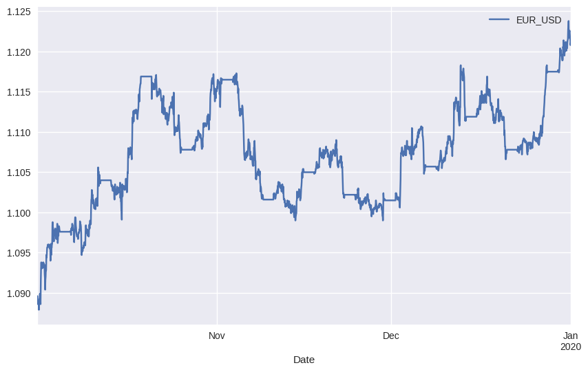
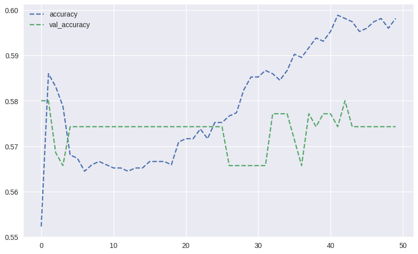
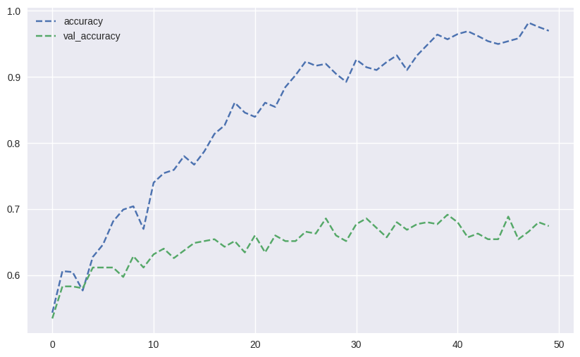
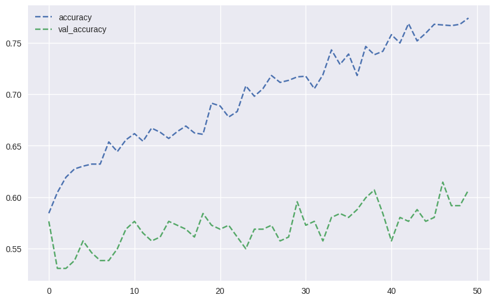
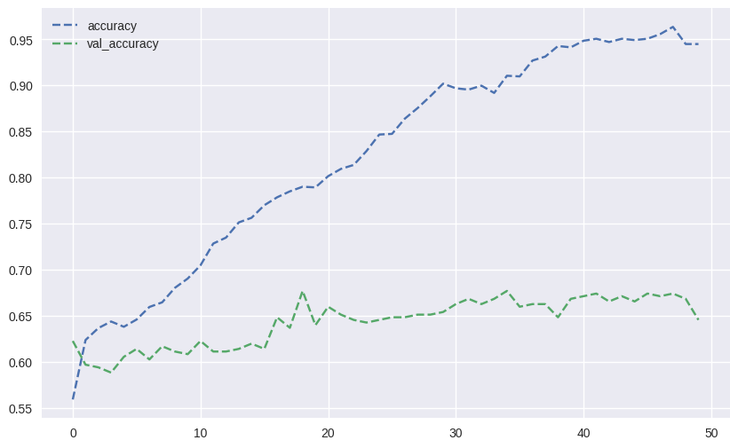
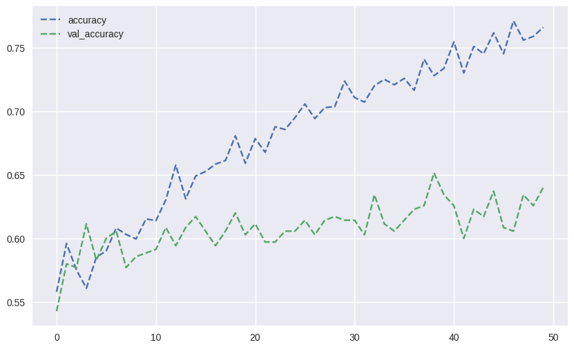

import numpy as np
import pandas as pd
import matplotlib.pyplot as plt
plt.style.use('seaborn-v0_8')
np.set_printoptions(suppress=True, precision=4)
%matplotlib inline38 Exchange Rate Prediction
In this tutorial we use dense neural networks to predict directional change in the EUR-USD exchange rate during 2019. This is a classification problem.
This code is taken from Chpater 7 of Artificial Intelligence in Finance by Yves Hilpisch.
38.1 Import Packages
Let’s begin by importing the packages that we will need.
38.2 Read-In and Wrangle Data
Next, let’s read and wrangle the data.
raw = pd.read_csv('eur_usd.csv')
raw.set_index('Date', inplace = True)
raw.index = pd.to_datetime(raw.index)
raw.head()| HIGH | LOW | OPEN | CLOSE | |
|---|---|---|---|---|
| Date | ||||
| 2019-10-01 00:00:00 | 1.0899 | 1.0897 | 1.0897 | 1.0899 |
| 2019-10-01 00:01:00 | 1.0899 | 1.0896 | 1.0899 | 1.0898 |
| 2019-10-01 00:02:00 | 1.0898 | 1.0896 | 1.0898 | 1.0896 |
| 2019-10-01 00:03:00 | 1.0898 | 1.0896 | 1.0897 | 1.0898 |
| 2019-10-01 00:04:00 | 1.0898 | 1.0896 | 1.0897 | 1.0898 |
The data consist of open, high, low, close data. All we need are the close prices, so let’s grab those.
data = pd.DataFrame(raw['CLOSE'].loc[:])
data.columns = ['EUR_USD']
data.head()| EUR_USD | |
|---|---|
| Date | |
| 2019-10-01 00:00:00 | 1.0899 |
| 2019-10-01 00:01:00 | 1.0898 |
| 2019-10-01 00:02:00 | 1.0896 |
| 2019-10-01 00:03:00 | 1.0898 |
| 2019-10-01 00:04:00 | 1.0898 |
The original data is one minute snap shots. We’ll resample this every hour.
data = data.resample('1h', label='right').last().ffill()
data.head()| EUR_USD | |
|---|---|
| Date | |
| 2019-10-01 01:00:00 | 1.0896 |
| 2019-10-01 02:00:00 | 1.0890 |
| 2019-10-01 03:00:00 | 1.0886 |
| 2019-10-01 04:00:00 | 1.0888 |
| 2019-10-01 05:00:00 | 1.0889 |
Let’s take a look at the EUR-USD exchange rate over time.
data.plot(figsize=(10, 6));
38.3 Adding Features
We’ll add a variety of features that are all functions of the price history. We’ll do this via a user-defined function.
symbol = 'EUR_USD'
lags = 5def add_lags(data, symbol, lags, window=20):
cols = []
df = data.copy()
df.dropna(inplace=True) # return
df['r'] = np.log(df / df.shift())
df['sma'] = df[symbol].rolling(window).mean()
df['min'] = df[symbol].rolling(window).min()
df['max'] = df[symbol].rolling(window).max()
df['mom'] = df['r'].rolling(window).mean()
df['vol'] = df['r'].rolling(window).std()
df.dropna(inplace=True)
df['d'] = np.where(df['r'] > 0, 1, 0) # directional move
features = [symbol, 'r', 'd', 'sma', 'min', 'max', 'mom', 'vol']
for f in features: # creating lagged values
for lag in range(1, lags + 1):
col = f'{f}_lag_{lag}'
df[col] = df[f].shift(lag)
cols.append(col)
df.dropna(inplace=True)
return df, colsdata, cols = add_lags(data, symbol, lags)Let’s take a look at all the features that we have created.
cols['EUR_USD_lag_1',
'EUR_USD_lag_2',
'EUR_USD_lag_3',
'EUR_USD_lag_4',
'EUR_USD_lag_5',
'r_lag_1',
'r_lag_2',
'r_lag_3',
'r_lag_4',
'r_lag_5',
'd_lag_1',
'd_lag_2',
'd_lag_3',
'd_lag_4',
'd_lag_5',
'sma_lag_1',
'sma_lag_2',
'sma_lag_3',
'sma_lag_4',
'sma_lag_5',
'min_lag_1',
'min_lag_2',
'min_lag_3',
'min_lag_4',
'min_lag_5',
'max_lag_1',
'max_lag_2',
'max_lag_3',
'max_lag_4',
'max_lag_5',
'mom_lag_1',
'mom_lag_2',
'mom_lag_3',
'mom_lag_4',
'mom_lag_5',
'vol_lag_1',
'vol_lag_2',
'vol_lag_3',
'vol_lag_4',
'vol_lag_5']Here is what our dataset now looks like.
data.round(4).head()| EUR_USD | r | sma | min | max | mom | vol | d | EUR_USD_lag_1 | EUR_USD_lag_2 | ... | mom_lag_1 | mom_lag_2 | mom_lag_3 | mom_lag_4 | mom_lag_5 | vol_lag_1 | vol_lag_2 | vol_lag_3 | vol_lag_4 | vol_lag_5 | |
|---|---|---|---|---|---|---|---|---|---|---|---|---|---|---|---|---|---|---|---|---|---|
| Date | |||||||||||||||||||||
| 2019-10-02 02:00:00 | 1.0937 | -0.0001 | 1.0916 | 1.0879 | 1.0938 | 0.0002 | 0.0008 | 0 | 1.0938 | 1.0932 | ... | 0.0002 | 0.0002 | 0.0002 | 0.0002 | 0.0002 | 0.0008 | 0.0008 | 0.0008 | 0.0008 | 0.0008 |
| 2019-10-02 03:00:00 | 1.0937 | 0.0000 | 1.0918 | 1.0885 | 1.0938 | 0.0003 | 0.0008 | 0 | 1.0937 | 1.0938 | ... | 0.0002 | 0.0002 | 0.0002 | 0.0002 | 0.0002 | 0.0008 | 0.0008 | 0.0008 | 0.0008 | 0.0008 |
| 2019-10-02 04:00:00 | 1.0936 | -0.0001 | 1.0921 | 1.0886 | 1.0938 | 0.0002 | 0.0008 | 0 | 1.0937 | 1.0937 | ... | 0.0003 | 0.0002 | 0.0002 | 0.0002 | 0.0002 | 0.0008 | 0.0008 | 0.0008 | 0.0008 | 0.0008 |
| 2019-10-02 05:00:00 | 1.0933 | -0.0003 | 1.0923 | 1.0886 | 1.0938 | 0.0002 | 0.0008 | 0 | 1.0936 | 1.0937 | ... | 0.0002 | 0.0003 | 0.0002 | 0.0002 | 0.0002 | 0.0008 | 0.0008 | 0.0008 | 0.0008 | 0.0008 |
| 2019-10-02 06:00:00 | 1.0935 | 0.0002 | 1.0925 | 1.0886 | 1.0938 | 0.0002 | 0.0008 | 1 | 1.0933 | 1.0936 | ... | 0.0002 | 0.0002 | 0.0003 | 0.0002 | 0.0002 | 0.0008 | 0.0008 | 0.0008 | 0.0008 | 0.0008 |
5 rows × 48 columns
Let’s look at just a few rows and columns of the dataset.
data.iloc[:5, :14].round(4)| EUR_USD | r | sma | min | max | mom | vol | d | EUR_USD_lag_1 | EUR_USD_lag_2 | EUR_USD_lag_3 | EUR_USD_lag_4 | EUR_USD_lag_5 | r_lag_1 | |
|---|---|---|---|---|---|---|---|---|---|---|---|---|---|---|
| Date | ||||||||||||||
| 2019-10-02 02:00:00 | 1.0937 | -0.0001 | 1.0916 | 1.0879 | 1.0938 | 0.0002 | 0.0008 | 0 | 1.0938 | 1.0932 | 1.0931 | 1.0931 | 1.0931 | 0.0005 |
| 2019-10-02 03:00:00 | 1.0937 | 0.0000 | 1.0918 | 1.0885 | 1.0938 | 0.0003 | 0.0008 | 0 | 1.0937 | 1.0938 | 1.0932 | 1.0931 | 1.0931 | -0.0001 |
| 2019-10-02 04:00:00 | 1.0936 | -0.0001 | 1.0921 | 1.0886 | 1.0938 | 0.0002 | 0.0008 | 0 | 1.0937 | 1.0937 | 1.0938 | 1.0932 | 1.0931 | 0.0000 |
| 2019-10-02 05:00:00 | 1.0933 | -0.0003 | 1.0923 | 1.0886 | 1.0938 | 0.0002 | 0.0008 | 0 | 1.0936 | 1.0937 | 1.0937 | 1.0938 | 1.0932 | -0.0001 |
| 2019-10-02 06:00:00 | 1.0935 | 0.0002 | 1.0925 | 1.0886 | 1.0938 | 0.0002 | 0.0008 | 1 | 1.0933 | 1.0936 | 1.0937 | 1.0937 | 1.0938 | -0.0003 |
38.4 Dealing with Class Imbalance
Classification with neural networks works best with evenly distributed classes. The .fit() method of networks built with keras has a class_weight argument that can adjust for imbalanced classes.
In this section we calculate the dict of class weights that will be given in the class_weight argument below.
c = data['d'].value_counts()
cd
0 1445
1 738
Name: count, dtype: int64np.bincount(data['d'])array([1445, 738])def cw(df):
c0, c1 = np.bincount(df['d'])
w0 = (1 / c0) * (len(df)) / 2
w1 = (1 / c1) * (len(df)) / 2
return {0: w0, 1: w1}class_weight = cw(data)
class_weight{0: 0.755363321799308, 1: 1.4789972899728998}print(class_weight[0] * c[0])
print(class_weight[1] * c[1])1091.5
1091.538.5 Creating the Neural Network
In this section we proceed to build the neural network.
import random
import logging
import tensorflow as tf
from keras.layers import Dense
from keras.models import Sequential
#from keras.optimizers import Adam
from tensorflow.keras.optimizers.legacy import Adam
from sklearn.metrics import accuracy_score
tf.get_logger().setLevel(logging.ERROR)2023-09-01 13:48:11.547160: I tensorflow/tsl/cuda/cudart_stub.cc:28] Could not find cuda drivers on your machine, GPU will not be used.
2023-09-01 13:48:11.721990: I tensorflow/tsl/cuda/cudart_stub.cc:28] Could not find cuda drivers on your machine, GPU will not be used.
2023-09-01 13:48:11.723387: I tensorflow/core/platform/cpu_feature_guard.cc:182] This TensorFlow binary is optimized to use available CPU instructions in performance-critical operations.
To enable the following instructions: AVX2 FMA, in other operations, rebuild TensorFlow with the appropriate compiler flags.
2023-09-01 13:48:13.296663: W tensorflow/compiler/tf2tensorrt/utils/py_utils.cc:38] TF-TRT Warning: Could not find TensorRTThis function sets all the relevant the random seeds so we always get the same values.
def set_seeds(seed=100):
random.seed(seed)
np.random.seed(seed)
tf.random.set_seed(seed)We will use the Adam optimizer.
optimizer = Adam(learning_rate=0.001)The following user defined function creates a DNN model with hl number of hidden layers. Each layer has hu hidden units.
def create_model(hl=1, hu=128, optimizer=optimizer):
model = Sequential()
model.add(Dense(hu, input_dim=len(cols), activation='relu'))
for _ in range(hl):
model.add(Dense(hu, activation='relu'))
model.add(Dense(1, activation='sigmoid'))
model.compile(loss='binary_crossentropy', optimizer=optimizer, metrics=['accuracy'])
return modelNext, we use the function above to create the neural network.
set_seeds()
model = create_model(hl=1, hu=128)Now we are ready to fit the model. Notice that we are using 50 epochs, and that we are setting the class_weight with the class-weight dict that was created by the function defined above.
%%time
model.fit(data[cols], data['d'], epochs=50, verbose=False, class_weight=cw(data));CPU times: user 7.08 s, sys: 503 ms, total: 7.58 s
Wall time: 4.88 sLet’s check how the model fit the training data (in-sample). As you can see we have an accuracy of about 60%.
model.evaluate(data[cols], data['d'])69/69 [==============================] - 0s 1ms/step - loss: 0.6017 - accuracy: 0.5754[0.6016581058502197, 0.5753549933433533]We can also check the number of gains and losses predicted. These numbers are close to the training data.
data['p'] = np.where(model.predict(data[cols]) > 0.5, 1, 0)
data['p'].value_counts()69/69 [==============================] - 0s 806us/stepp
1 1585
0 598
Name: count, dtype: int6438.6 Train Test Split
In this section, we create a holdout test set with 20% of the data, leaving 80% for training. This will give us a sense for how the model performs out-of-sample.
split = int(len(data) * 0.8)
train = data.iloc[:split].copy()
test = data.iloc[split:].copy()We set the random seeds and create a model with one hidden layer consisting of 128 units.
set_seeds()
model = create_model(hl=1, hu=128)Now we can fit our model. Notice that 20% of the training data is being used as a validation set upon which the training metrics are evaluated after each epoch. The model is not fit on the validation set.
%%time
h = model.fit(train[cols], train['d'], epochs=50, verbose=False, validation_split=0.2, shuffle=False, class_weight=cw(train));
#h = model.fit(train[cols], train['d'], epochs=50, verbose=False, validation_split=0.2, class_weight=cw(train));CPU times: user 5.46 s, sys: 501 ms, total: 5.96 s
Wall time: 4.15 sLet’s see how our model performed in-sample.
model.evaluate(train[cols], train['d'])55/55 [==============================] - 0s 1ms/step - loss: 0.6144 - accuracy: 0.5934[0.6143843531608582, 0.5933562517166138]Let’s see how our model performed out-of-sample.
model.evaluate(test[cols], test['d'])14/14 [==============================] - 0s 1ms/step - loss: 0.5977 - accuracy: 0.6133[0.5977151393890381, 0.6132723093032837]We can also view how many gains and losses were predicted on the test set.
test['p'] = np.where(model.predict(test[cols]) > 0.5, 1, 0)
test['p'].value_counts()14/14 [==============================] - 0s 880us/stepp
1 284
0 153
Name: count, dtype: int64Let’s plot our model accuracy and validation accuracy as follows.
res = pd.DataFrame(h.history)
res[['accuracy', 'val_accuracy']].plot(figsize=(10, 6), style='--');
38.7 Normalization
Normalizing training and test data is often useful when fitting a neural network.
mu, std = train.mean(), train.std()
train_ = (train - mu) / stdLet create a model with 2 hidden layers, each consisting of 128 hidden units.
set_seeds()
model = create_model(hl=2, hu=128)We can now fit our model.
%%time
h = model.fit(train_[cols], train['d'], epochs=50, verbose=False, validation_split=0.2, shuffle=False, class_weight=cw(train));CPU times: user 6.29 s, sys: 616 ms, total: 6.91 s
Wall time: 4.49 sLet’s evaluate it in-sample. As we can see there is a big jump in the in-sample accuracy.
model.evaluate(train_[cols], train['d'])55/55 [==============================] - 0s 1ms/step - loss: 0.4099 - accuracy: 0.9124[0.40989920496940613, 0.9123711585998535]Next, we normalize the test set. Notice that we are using the mu and std from the training set. It is important to not use the testing set to normalize itself because this bleeds data from the training set into the testing process.
test_ = (test - mu) / stdLet’s check the out-of-sample accuracy of the model.
model.evaluate(test_[cols], test['d'])14/14 [==============================] - 0s 1ms/step - loss: 1.7293 - accuracy: 0.6430[1.7292619943618774, 0.6430205702781677]We can also check how many gains and losses were predicted on the test set
test['p'] = np.where(model.predict(test_[cols]) > 0.5, 1, 0)
test['p'].value_counts()14/14 [==============================] - 0s 1ms/stepp
0 268
1 169
Name: count, dtype: int64Finally, let’s graph the training and validation accuracies.
res = pd.DataFrame(h.history)
res[['accuracy', 'val_accuracy']].plot(figsize=(10, 6), style='--');
38.8 Dropout
In this section we implement drop-out regularization.
from keras.layers import DropoutWe modify the user-defined function to allow for dropout regularization. Notice that a Dropout layer is added after the input layer and each hidden layer.
def create_model(hl=1, hu=128, dropout=True, rate=0.3, optimizer=optimizer):
model = Sequential()
model.add(Dense(hu, input_dim=len(cols), activation='relu'))
if dropout:
model.add(Dropout(rate, seed=100))
for _ in range(hl):
model.add(Dense(hu, activation='relu'))
if dropout:
model.add(Dropout(rate, seed=100))
model.add(Dense(1, activation='sigmoid'))
model.compile(loss='binary_crossentropy', optimizer=optimizer, metrics=['accuracy'])
return modelLet’s instantiate the model with a single hidden layer, and a drop-out rate of 30%.
set_seeds()
model = create_model(hl=1, hu=128, rate=0.3)Now we can fit the model.
%%time
h = model.fit(train_[cols], train['d'], epochs=50, verbose=False, validation_split=0.15, shuffle=False, class_weight=cw(train));CPU times: user 6.38 s, sys: 574 ms, total: 6.95 s
Wall time: 4.79 sLet’s check the in-sample accuracy.
model.evaluate(train_[cols], train['d'])55/55 [==============================] - 0s 1ms/step - loss: 0.4345 - accuracy: 0.7984[0.43445172905921936, 0.7983963489532471]Let’s also check the out-of-sample accuracy.
model.evaluate(test_[cols], test['d'])14/14 [==============================] - 0s 1ms/step - loss: 0.5777 - accuracy: 0.6705[0.5777181386947632, 0.6704805493354797]Finally, we graph the training and validation accuracy.
res = pd.DataFrame(h.history)
res[['accuracy', 'val_accuracy']].plot(figsize=(10, 6), style='--');
38.9 Regularization
In this section we implement both Lasso and Ridge regularization.
38.9.1 l1 Regularization
Let’s begin with the l1 norm, i.e. Lasso regularization.
from keras.regularizers import l1We modify the create_model() function to accommodate regularization. Notice that this is done when adding a layer by populating the activity_regularizer argument.
def create_model(hl=1, hu=128, dropout=False, rate=0.3, regularize=False, reg=l1(0.0005), optimizer=optimizer, input_dim=len(cols)):
if not regularize:
reg = None
model = Sequential()
model.add(Dense(hu, input_dim=input_dim, activity_regularizer=reg, activation='relu'))
if dropout:
model.add(Dropout(rate, seed=100))
for _ in range(hl):
model.add(Dense(hu, activation='relu', activity_regularizer=reg))
if dropout:
model.add(Dropout(rate, seed=100))
model.add(Dense(1, activation='sigmoid'))
model.compile(loss='binary_crossentropy', optimizer=optimizer, metrics=['accuracy'])
return modelLet’s instantiate the network with a single hidden layer consisting of 128 hidden units.
set_seeds()
model = create_model(hl=1, hu=128, regularize=True)Next we fit the model.
%%time
h = model.fit(train_[cols], train['d'], epochs=50, verbose=False, validation_split=0.2, shuffle=False, class_weight=cw(train));CPU times: user 6.21 s, sys: 490 ms, total: 6.7 s
Wall time: 4.5 sLet’s check in-sample accuracy.
model.evaluate(train_[cols], train['d'])55/55 [==============================] - 0s 1ms/step - loss: 0.4188 - accuracy: 0.8608[0.41878587007522583, 0.8608247637748718]Let’s check out-of-sample accuracy.
model.evaluate(test_[cols], test['d'])14/14 [==============================] - 0s 1ms/step - loss: 1.0168 - accuracy: 0.6384[1.0167690515518188, 0.6384439468383789]Finally, we graph the training and validation accuracies.
res = pd.DataFrame(h.history)
res[['accuracy', 'val_accuracy']].plot(figsize=(10, 6), style='--');
38.9.2 l2 Regularization
Next let’s try the l2 norm, i.e Ridge regularization.
from keras.regularizers import l2We start by instantiating the model. This time we use two hidden layers, each consisting of 128 hidden units.
set_seeds()
h = model = create_model(hl=2, hu=128, dropout=True, rate=0.3, regularize=True, reg=l2(0.001))Next, we fit the model.
%%time
h = model.fit(train_[cols], train['d'], epochs=50, verbose=False, validation_split=0.2, shuffle=False, class_weight=cw(train));CPU times: user 7.48 s, sys: 635 ms, total: 8.11 s
Wall time: 5.11 sLet’s check the training accuracy.
model.evaluate(train_[cols], train['d'])55/55 [==============================] - 0s 1ms/step - loss: 0.4517 - accuracy: 0.7852[0.45165252685546875, 0.7852233648300171]Let’s check the test accuracy.
model.evaluate(test_[cols], test['d'])14/14 [==============================] - 0s 2ms/step - loss: 0.5871 - accuracy: 0.6270[0.5870832800865173, 0.6270022988319397]Next, we graph the training accuracy and validation accuracy.
res = pd.DataFrame(h.history)
res[['accuracy', 'val_accuracy']].plot(figsize=(10, 6), style='--');
Let’s check the average difference in training and validation accuracy.
res.mean()['accuracy'] - res.mean()['val_accuracy']0.073576755523681738.10 Optimizers
In this section we check the in-sample and out-of-sample accuracy for a variety of different optimizers.
import timeoptimizers = ['sgd', 'rmsprop', 'adagrad', 'adadelta', 'adam', 'adamax', 'nadam']%%time
for optimizer in optimizers:
set_seeds()
model = create_model(hl=1, hu=128, dropout=True, rate=0.3, regularize=False, reg=l2(0.001), optimizer=optimizer)
t0 = time.time()
model.fit(train_[cols], train['d'], epochs=50, verbose=False, validation_split=0.2, shuffle=False, class_weight=cw(train))
t1 = time.time()
t = t1 - t0
acc_tr = model.evaluate(train_[cols], train['d'], verbose=False)[1]
acc_te = model.evaluate(test_[cols], test['d'], verbose=False)[1]
out = f'{optimizer:10s} | time[s]: {t:.4f} | in-sample={acc_tr:.4f}'
out += f' | out-of-sample={acc_te:.4f}'
print(out)sgd | time[s]: 4.6996 | in-sample=0.6346 | out-of-sample=0.6728
rmsprop | time[s]: 4.3185 | in-sample=0.7692 | out-of-sample=0.6499
adagrad | time[s]: 4.2688 | in-sample=0.6254 | out-of-sample=0.6613
adadelta | time[s]: 4.4679 | in-sample=0.3396 | out-of-sample=0.3501
adam | time[s]: 4.6540 | in-sample=0.7766 | out-of-sample=0.6499
adamax | time[s]: 4.6364 | in-sample=0.6770 | out-of-sample=0.6293
nadam | time[s]: 4.8502 | in-sample=0.7852 | out-of-sample=0.6682
CPU times: user 43.6 s, sys: 2.32 s, total: 45.9 s
Wall time: 33.4 sThe choice of optimizer doesn’t seem to make a huge difference, except for adadelta.